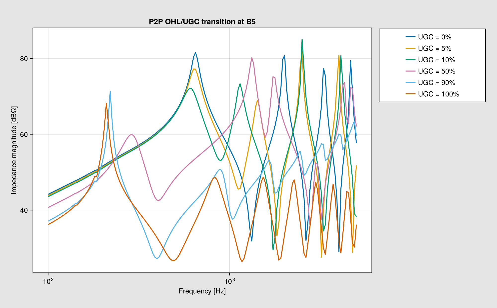
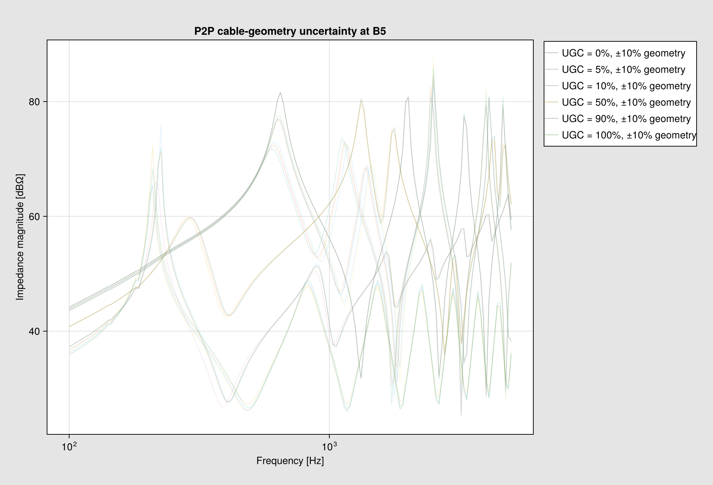
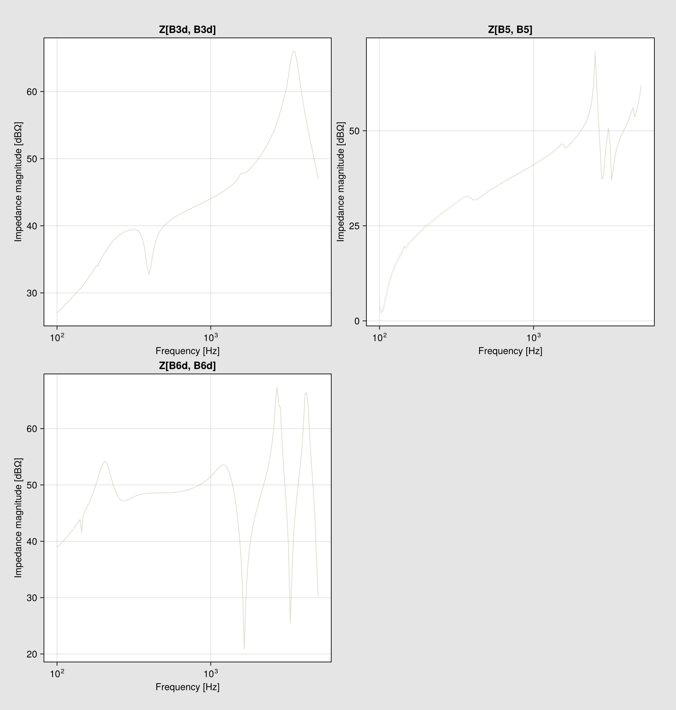

P2P HVDC studies with Gridspace
This tutorial constructs three studies directly from Grid objects:
- the deterministic OHL/UGC length transition;
- bounded uncertainty on every nonzero cable geometry dimension; and
- bounded uncertainty on physically meaningful MMC parameters.
MonteCarlo samples all uncertain axes together. Each trial materializes a numeric network before PowerModels runs. The completed responses remain available to PlotBuilder after raw samples are discarded.
using Measurements
using CairoMakie
using PowerImpedance
using PowerImpedance.NetworkBuilder: @gridspace, Grid, Gridspace, NetworkState,
define
using StatisticsFixed network data
const transmission_voltage = 380 / sqrt(3)
const p_hvdc = 100.0
const q_c1 = 100.0
const q_c2 = 100.0
const soil_resistivity = 100.0
const corridor_length = 100e3;
const connections = (
(node = :B3d, element = :tl1, side = 2, terminal = 1),
(node = :B3d, element = :c1, side = 2, terminal = 1),
(node = :B3q, element = :tl1, side = 2, terminal = 2),
(node = :B3q, element = :c1, side = 2, terminal = 2),
(node = :B2d, element = :g4, side = 1, terminal = 1),
(node = :B2d, element = :tl1, side = 1, terminal = 1),
(node = :B2q, element = :g4, side = 1, terminal = 2),
(node = :B2q, element = :tl1, side = 1, terminal = 2),
(node = :B4, element = :ugc, side = 1, terminal = 1),
(node = :B4, element = :c1, side = 1, terminal = 1),
(node = :BX, element = :ugc, side = 2, terminal = 1),
(node = :BX, element = :ohl, side = 1, terminal = 1),
(node = :B5, element = :ohl, side = 2, terminal = 1),
(node = :B5, element = :c2, side = 1, terminal = 1),
(node = :B6d, element = :tl78, side = 1, terminal = 1),
(node = :B6d, element = :c2, side = 2, terminal = 1),
(node = :B6q, element = :tl78, side = 1, terminal = 2),
(node = :B6q, element = :c2, side = 2, terminal = 2),
(node = :B7d, element = :g1, side = 1, terminal = 1),
(node = :B7d, element = :tl78, side = 2, terminal = 1),
(node = :B7q, element = :g1, side = 1, terminal = 2),
(node = :B7q, element = :tl78, side = 2, terminal = 2),
);
const builder_options = (;
voltageBase = transmission_voltage,
power_flow = (; is_bounded = (; bus_voltage = true))
);These elements do not change in the length or cable-geometry studies. The lazy constructors still return singleton Gridspaces; only makes the fixed scalar elements explicit.
const fixed_element_specs = (;
g1 = ac_source(Grid;
V = transmission_voltage,
P = p_hvdc,
P_min = -2000,
P_max = 2000,
Q_min = -1000,
Q_max = 1000,
pins = 3,
transformation = true
),
c1 = mmc(Grid;
Vᵈᶜ = 640,
vDCbase = 640,
Vₘ = transmission_voltage,
P = -p_hvdc,
Q = q_c1,
P_min = -1500,
P_max = 1500,
Q_min = -500,
Q_max = 500,
occ = PI_control(Kₚ = 0.7691, Kᵢ = 522.7654),
ccc = PI_control(Kₚ = 0.1048, Kᵢ = 48.1914),
pll = PI_control(Kₚ = 0.28, Kᵢ = 12.5664),
q = PI_control(Kₚ = 0.1, Kᵢ = 31.4159),
dc = PI_control(Kₚ = 6.0, Kᵢ = 15.0),
timeDelay = 200e-6,
padeOrderNum = 5,
padeOrderDen = 5
),
c2 = mmc(Grid;
Vᵈᶜ = 640,
vDCbase = 640,
Vₘ = transmission_voltage,
P = p_hvdc,
Q = q_c2,
P_min = -1000,
P_max = 1000,
Q_min = -1000,
Q_max = 1000,
vACbase_LL_RMS = 333,
turnsRatio = 333 / 380,
Lᵣ = 0.0461,
Rᵣ = 0.4103,
Lₐᵣₘ = 30e-3,
occ = PI_control(Kₚ = 0.7691, Kᵢ = 522.7654),
ccc = PI_control(Kₚ = 0.1048, Kᵢ = 48.1914),
pll = PI_control(Kₚ = 0.28, Kᵢ = 12.5664),
p = PI_control(Kₚ = 0.1, Kᵢ = 31.4159),
q = PI_control(Kₚ = 0.1, Kᵢ = 31.4159),
timeDelay = 200e-6,
padeOrderNum = 5,
padeOrderDen = 5
),
g4 = ac_source(Grid;
V = transmission_voltage,
P = p_hvdc,
P_min = -2000,
P_max = 2000,
Q_min = -1000,
Q_max = 1000,
pins = 3,
transformation = true
),
tl1 = overhead_line(Grid;
length = 25e3,
conductors = Conductors(Grid;
organization = :flat,
nᵇ = 3,
nˢᵇ = 1,
Rᵈᶜ = 0.063,
rᶜ = 0.015,
yᵇᶜ = 30.0,
Δyᵇᶜ = 0.0,
Δxᵇᶜ = 10.0,
Δ̃xᵇᶜ = 0.0,
dˢᵇ = 0.0,
dˢᵃᵍ = 10.0
),
groundwires = Groundwires(Grid;
nᵍ = 2,
Rᵍᵈᶜ = 0.92,
rᵍ = 0.0062,
Δxᵍ = 6.5,
Δyᵍ = 7.5,
dᵍˢᵃᵍ = 10.0
),
earth_parameters = (1, 1, soil_resistivity),
transformation = true
),
tl78 = overhead_line(Grid;
length = 90e3,
conductors = Conductors(Grid;
organization = :flat,
nᵇ = 3,
nˢᵇ = 1,
Rᵈᶜ = 0.063,
rᶜ = 0.015,
yᵇᶜ = 30.0,
Δyᵇᶜ = 0.0,
Δxᵇᶜ = 10.0,
Δ̃xᵇᶜ = 0.0,
dˢᵇ = 0.0,
dˢᵃᵍ = 10.0
),
groundwires = Groundwires(Grid;
nᵍ = 2,
Rᵍᵈᶜ = 0.92,
rᵍ = 0.0062,
Δxᵍ = 6.5,
Δyᵍ = 7.5,
dᵍˢᵃᵍ = 10.0
),
earth_parameters = (1, 1, soil_resistivity),
transformation = true
)
);
const fixed_elements = map(only, fixed_element_specs);
const corridor_conductors = only(Conductors(Grid;
organization = :flat,
nᵇ = 2,
nˢᵇ = 1,
Rᵈᶜ = 0.0266,
rᶜ = 44.8e-3 / 2,
yᵇᶜ = 18.0,
Δyᵇᶜ = 0.0,
Δxᵇᶜ = 7.3,
Δ̃xᵇᶜ = 0.0,
dˢᵇ = 0.0,
dˢᵃᵍ = 6.0
));
const corridor_groundwires = only(Groundwires(Grid;
nᵍ = 2,
Rᵍᵈᶜ = 0.92,
rᵍ = 0.0062,
Δxᵍ = 7.3,
Δyᵍ = 7.0,
dᵍˢᵃᵍ = 6.0
));Cable layer boundaries are generated from positive thicknesses. Independent perturbations therefore cannot invert or overlap adjacent layers.
@gridspace struct P2PCableGeometry
spacing::Float64
burial_depth::Float64
core_radius::Float64
insulation_1::Float64
sheath::Float64
insulation_2::Float64
screen::Float64
insulation_3::Float64
end;
const nominal_geometry = only(P2PCableGeometry(
spacing = 1.0,
burial_depth = 1.0,
core_radius = 0.02622,
insulation_1 = 0.06006 - 0.02622,
sheath = 0.06336 - 0.06006,
insulation_2 = 0.06636 - 0.06336,
screen = 0.06651 - 0.06636,
insulation_3 = 0.07256 - 0.06651
));Deterministic OHL/UGC transition
One explicit Grid holds the paired lengths. Treating the OHL and UGC lengths as independent grids would create an unphysical Cartesian product. A 100 m endpoint regularization avoids the singular zero-length line model; the labels retain the requested 0% and 100% values.
const characteristic_shares = (0.0, 0.05, 0.1, 0.5, 0.9, 1.0)
const endpoint_fraction = 1e-3
const corridor_lengths = Grid(map(characteristic_shares) do share
effective_share = clamp(share, endpoint_fraction, 1 - endpoint_fraction)
(;
share,
ohl = corridor_length * (1 - effective_share),
ugc = corridor_length * effective_share
)
end);
transition_builders = Gridspace{NetworkState}(
lengths -> begin
r1 = nominal_geometry.core_radius
r2 = r1 + nominal_geometry.insulation_1
r3 = r2 + nominal_geometry.sheath
r4 = r3 + nominal_geometry.insulation_2
r5 = r4 + nominal_geometry.screen
r6 = r5 + nominal_geometry.insulation_3
affected_elements = (;
ohl = only(overhead_line(Grid;
length = lengths.ohl,
conductors = corridor_conductors,
groundwires = corridor_groundwires,
earth_parameters = (1, 1, soil_resistivity),
transformation = true
)),
ugc = only(cable(Grid;
length = lengths.ugc,
positions = [
(-nominal_geometry.spacing / 2, nominal_geometry.burial_depth),
(nominal_geometry.spacing / 2, nominal_geometry.burial_depth)
],
C1 = Conductor(rₒ = r1, ρ = 2.354e-8, μᵣ = 1.035),
I1 = Insulator(rᵢ = r1, rₒ = r2, ϵᵣ = 2.67, μᵣ = 1.469),
C2 = Conductor(rᵢ = r2, rₒ = r3, ρ = 2.14e-7, μᵣ = 1.0),
I2 = Insulator(rᵢ = r3, rₒ = r4, ϵᵣ = 2.3, μᵣ = 1.0),
C3 = Conductor(rᵢ = r4, rₒ = r5, ρ = 2.826e-8, μᵣ = 1.0),
I3 = Insulator(rᵢ = r5, rₒ = r6, ϵᵣ = 2.3, μᵣ = 1.0),
earth_parameters = (1, 1, soil_resistivity),
transformation = true
))
)
define(merge(deepcopy(fixed_elements), affected_elements), connections;
options = builder_options)
end,
(corridor_lengths,),
(:corridor_lengths,)
);
frequency_points = 160
transition_problems = PowerImpedanceProblem(
transition_builders;
nodes=[:B5],
eliminated_elements=[:c2],
frequency_range=(100.0, 5e3, frequency_points),
);
transition = compute(
ParametricProblem(transition_problems),
Combinatorial(NodalImpedance()),
);
transition_labels = ["UGC = $(round(Int, 100share))%" for share in characteristic_shares];
transition_groups = [Symbol("ugc_", round(Int, 100share)) for share in characteristic_shares];
transition_plot = only(PowerImpedance.plot(
transition;
entries=(:B5, :B5),
labels=transition_labels,
series_groups=transition_groups,
title="P2P OHL/UGC transition at B5",
figure_size=(1000, 620),
display_plot=false,
controls=false,
));
transition_plot.figure
±10% uncertainty on every cable geometry dimension
Grid(value, 10/sqrt(3)) describes a relative standard deviation. With a uniform distribution this is exactly a bounded ±10% interval. The axes below are the two cable positions, core radius, and all five positive layer thicknesses.
cable_geometry = P2PCableGeometry(
spacing = Grid(1.0, 10 / sqrt(3)),
burial_depth = Grid(1.0, 10 / sqrt(3)),
core_radius = Grid(0.02622, 10 / sqrt(3)),
insulation_1 = Grid(0.06006 - 0.02622, 10 / sqrt(3)),
sheath = Grid(0.06336 - 0.06006, 10 / sqrt(3)),
insulation_2 = Grid(0.06636 - 0.06336, 10 / sqrt(3)),
screen = Grid(0.06651 - 0.06636, 10 / sqrt(3)),
insulation_3 = Grid(0.07256 - 0.06651, 10 / sqrt(3))
);
cable_uq_builders = Gridspace{NetworkState}(
(lengths, geometry) -> begin
r1 = geometry.core_radius
r2 = r1 + geometry.insulation_1
r3 = r2 + geometry.sheath
r4 = r3 + geometry.insulation_2
r5 = r4 + geometry.screen
r6 = r5 + geometry.insulation_3
affected_elements = (;
ohl = only(overhead_line(Grid;
length = lengths.ohl,
conductors = corridor_conductors,
groundwires = corridor_groundwires,
earth_parameters = (1, 1, soil_resistivity),
transformation = true
)),
ugc = only(cable(Grid;
length = lengths.ugc,
positions = [
(-geometry.spacing / 2, geometry.burial_depth),
(geometry.spacing / 2, geometry.burial_depth)
],
C1 = Conductor(rₒ = r1, ρ = 2.354e-8, μᵣ = 1.035),
I1 = Insulator(rᵢ = r1, rₒ = r2, ϵᵣ = 2.67, μᵣ = 1.469),
C2 = Conductor(rᵢ = r2, rₒ = r3, ρ = 2.14e-7, μᵣ = 1.0),
I2 = Insulator(rᵢ = r3, rₒ = r4, ϵᵣ = 2.3, μᵣ = 1.0),
C3 = Conductor(rᵢ = r4, rₒ = r5, ρ = 2.826e-8, μᵣ = 1.0),
I3 = Insulator(rᵢ = r5, rₒ = r6, ϵᵣ = 2.3, μᵣ = 1.0),
earth_parameters = (1, 1, soil_resistivity),
transformation = true
))
)
define(merge(deepcopy(fixed_elements), affected_elements), connections;
options = builder_options)
end,
(corridor_lengths, cable_geometry),
(:corridor_lengths, :cable_geometry)
);
cable_trials = 4
cable_uq_problems = PowerImpedanceProblem(
cable_uq_builders;
nodes=[:B5],
eliminated_elements=[:c2],
frequency_range=(100.0, 5e3, frequency_points),
);
cable_uq = compute(
ParametricProblem(cable_uq_problems),
MonteCarlo(
NodalImpedance();
trials=cable_trials,
distribution=:uniform,
seed=2027,
return_samples=true,
),
);
cable_plot_labels = reduce(vcat, [
fill("UGC = $(round(Int, 100share))%, ±10% geometry", length(group))
for (share, group) in zip(characteristic_shares, cable_uq.details.plot_data.values)
]);
cable_plot_groups = reduce(vcat, [
fill(Symbol("ugc_", round(Int, 100share)), length(group))
for (share, group) in zip(characteristic_shares, cable_uq.details.plot_data.values)
]);
cable_plot = only(PowerImpedance.plot(
cable_uq;
entries=(:B5, :B5),
labels=cable_plot_labels,
series_groups=cable_plot_groups,
title="P2P cable-geometry uncertainty at B5",
figure_size=(1000, 680),
display_plot=false,
controls=false,
));
cable_plot.figure
Peak magnitude and frequency retain trial-to-trial resonance movement for every corridor share. The table complements the trajectory plot with values suitable for automated screening.
cable_geometry_kpis = map(
characteristic_shares,
cable_uq.details.plot_data.values,
) do share, responses
frequencies_hz = real.(first(responses).frequencies) ./ (2π)
curves_db = hcat((20 .* log10.(abs.(vec(response.response[1, 1, :])))
for response in responses)...)
peaks_db = vec(maximum(curves_db; dims=1))
peak_frequencies = [frequencies_hz[argmax(view(curves_db, :, trial))]
for trial in axes(curves_db, 2)]
return (;
ugc_share=share,
peak_db_median=median(peaks_db),
peak_db_q05=quantile(peaks_db, 0.05),
peak_db_q95=quantile(peaks_db, 0.95),
peak_frequency_median=median(peak_frequencies),
)
end;Converter-parameter uncertainty
This pass fixes the corridor at 50% UGC and samples both MMCs. Arm-reactor inductance and submodule capacitance use bounded ±5% manufacturing tolerances; equivalent arm resistance uses ±10% to cover conductor tolerance and operating temperature. These are defensible screening assumptions, not substitutes for project-specific procurement distributions.
Every converter trial gets its own numeric power flow, equilibrium, and linearization. Measurements do not enter PowerModels.
const half_corridor = corridor_lengths[4];
converter_uq_elements = merge(
(;
g1 = fixed_element_specs.g1,
g4 = fixed_element_specs.g4,
tl1 = fixed_element_specs.tl1,
tl78 = fixed_element_specs.tl78
),
(;
c1 = mmc(Grid;
Vᵈᶜ = 640,
vDCbase = 640,
Vₘ = transmission_voltage,
P = -p_hvdc,
Q = q_c1,
P_min = -1500,
P_max = 1500,
Q_min = -500,
Q_max = 500,
Lₐᵣₘ = Grid(50e-3, 5 / sqrt(3)),
Rₐᵣₘ = Grid(1.07, 10 / sqrt(3)),
Cₐᵣₘ = Grid(10e-3, 5 / sqrt(3)),
occ = PI_control(Kₚ = 0.7691, Kᵢ = 522.7654),
ccc = PI_control(Kₚ = 0.1048, Kᵢ = 48.1914),
pll = PI_control(Kₚ = 0.28, Kᵢ = 12.5664),
q = PI_control(Kₚ = 0.1, Kᵢ = 31.4159),
dc = PI_control(Kₚ = 6.0, Kᵢ = 15.0),
timeDelay = 200e-6,
padeOrderNum = 5,
padeOrderDen = 5
),
c2 = mmc(Grid;
Vᵈᶜ = 640,
vDCbase = 640,
Vₘ = transmission_voltage,
P = p_hvdc,
Q = q_c2,
P_min = -1000,
P_max = 1000,
Q_min = -1000,
Q_max = 1000,
vACbase_LL_RMS = 333,
turnsRatio = 333 / 380,
Lᵣ = 0.0461,
Rᵣ = 0.4103,
Lₐᵣₘ = Grid(30e-3, 5 / sqrt(3)),
Rₐᵣₘ = Grid(1.07, 10 / sqrt(3)),
Cₐᵣₘ = Grid(10e-3, 5 / sqrt(3)),
occ = PI_control(Kₚ = 0.7691, Kᵢ = 522.7654),
ccc = PI_control(Kₚ = 0.1048, Kᵢ = 48.1914),
pll = PI_control(Kₚ = 0.28, Kᵢ = 12.5664),
p = PI_control(Kₚ = 0.1, Kᵢ = 31.4159),
q = PI_control(Kₚ = 0.1, Kᵢ = 31.4159),
timeDelay = 200e-6,
padeOrderNum = 5,
padeOrderDen = 5
),
ohl = overhead_line(Grid;
length = half_corridor.ohl,
conductors = corridor_conductors,
groundwires = corridor_groundwires,
earth_parameters = (1, 1, soil_resistivity),
transformation = true
),
ugc = cable(Grid;
length = half_corridor.ugc,
positions = [(-0.5, 1.0), (0.5, 1.0)],
C1 = Conductor(rₒ = 0.02622, ρ = 2.354e-8, μᵣ = 1.035),
I1 = Insulator(rᵢ = 0.02622, rₒ = 0.06006, ϵᵣ = 2.67, μᵣ = 1.469),
C2 = Conductor(rᵢ = 0.06006, rₒ = 0.06336, ρ = 2.14e-7, μᵣ = 1.0),
I2 = Insulator(rᵢ = 0.06336, rₒ = 0.06636, ϵᵣ = 2.3, μᵣ = 1.0),
C3 = Conductor(rᵢ = 0.06636, rₒ = 0.06651, ρ = 2.826e-8, μᵣ = 1.0),
I3 = Insulator(rᵢ = 0.06651, rₒ = 0.07256, ϵᵣ = 2.3, μᵣ = 1.0),
earth_parameters = (1, 1, soil_resistivity),
transformation = true
)
)
);
converter_uq_builders = define(converter_uq_elements, connections;
options = builder_options);
converter_trials = 2
converter_uq_problems = PowerImpedanceProblem(
converter_uq_builders;
nodes=[:B3d, :B5, :B6d],
frequency_range=(100.0, 5e3, frequency_points),
);
converter_uq = compute(
ParametricProblem(converter_uq_problems),
MonteCarlo(
NodalImpedance();
trials=converter_trials,
distribution=:uniform,
seed=2028,
return_samples=true,
),
);[ Info: OTHER_ERROR
┌ Warning: Violations reported. Entering power flow with increments of setpoints to find a solution.
└ @ PowerImpedance.NetworkBuilder src/Network/NetworkBuilder/powerflow.jl:203
┌ Warning: Last resort: Relaxing constraints to find a solution and see which constraints are violated.
└ @ PowerImpedance.NetworkBuilder src/Network/NetworkBuilder/powerflow.jl:227
┌ Warning: Skipping PenaltyRelaxation for ConstraintIndex{MathOptInterface.VariableIndex,MathOptInterface.GreaterThan{Float64}}
└ @ MathOptInterface.Utilities src/Utilities/penalty_relaxation.jl:413
┌ Warning: Skipping PenaltyRelaxation for ConstraintIndex{MathOptInterface.VariableIndex,MathOptInterface.LessThan{Float64}}
└ @ MathOptInterface.Utilities src/Utilities/penalty_relaxation.jl:413
┌ Warning: ATTENTION! Constraint `` is violated by 9.09474683772899
└ @ PowerImpedance.NetworkBuilder src/Network/NetworkBuilder/powerflow.jl:421
┌ Warning: ATTENTION! Constraint `` is violated by 9.090495866550611
└ @ PowerImpedance.NetworkBuilder src/Network/NetworkBuilder/powerflow.jl:421
┌ Warning: ATTENTION! Constraint `` is violated by 9.090495866550599
└ @ PowerImpedance.NetworkBuilder src/Network/NetworkBuilder/powerflow.jl:421
┌ Warning: ATTENTION! Constraint `` is violated by 9.090495866550611
└ @ PowerImpedance.NetworkBuilder src/Network/NetworkBuilder/powerflow.jl:421
┌ Warning: ATTENTION! Constraint `` is violated by 9.094746838076814
└ @ PowerImpedance.NetworkBuilder src/Network/NetworkBuilder/powerflow.jl:421
┌ Warning: ATTENTION! Constraint `` is violated by 9.090495866550611
└ @ PowerImpedance.NetworkBuilder src/Network/NetworkBuilder/powerflow.jl:421
┌ Warning: ATTENTION! Constraint `` is violated by 9.112695443786496
└ @ PowerImpedance.NetworkBuilder src/Network/NetworkBuilder/powerflow.jl:421
┌ Warning: ATTENTION! Constraint `` is violated by 9.0904958665506
└ @ PowerImpedance.NetworkBuilder src/Network/NetworkBuilder/powerflow.jl:421
┌ Warning: ATTENTION! Constraint `` is violated by 9.090495866550611
└ @ PowerImpedance.NetworkBuilder src/Network/NetworkBuilder/powerflow.jl:421
┌ Warning: ATTENTION! Constraint `` is violated by 9.090495866550599
└ @ PowerImpedance.NetworkBuilder src/Network/NetworkBuilder/powerflow.jl:421
┌ Warning: ATTENTION! Constraint `` is violated by 9.090495866550611
└ @ PowerImpedance.NetworkBuilder src/Network/NetworkBuilder/powerflow.jl:421
┌ Warning: ATTENTION! Constraint `` is violated by 9.090613950558868
└ @ PowerImpedance.NetworkBuilder src/Network/NetworkBuilder/powerflow.jl:421
┌ Warning: ATTENTION! Constraint `` is violated by 9.090495866550599
└ @ PowerImpedance.NetworkBuilder src/Network/NetworkBuilder/powerflow.jl:421
┌ Warning: ATTENTION! Constraint `` is violated by 9.090495866550611
└ @ PowerImpedance.NetworkBuilder src/Network/NetworkBuilder/powerflow.jl:421
┌ Warning: ATTENTION! Constraint `` is violated by 9.090818483668144
└ @ PowerImpedance.NetworkBuilder src/Network/NetworkBuilder/powerflow.jl:421
┌ Warning: ATTENTION! Constraint `` is violated by 9.090495866550611
└ @ PowerImpedance.NetworkBuilder src/Network/NetworkBuilder/powerflow.jl:421
┌ Warning: ATTENTION! Constraint `` is violated by 9.092973974899806
└ @ PowerImpedance.NetworkBuilder src/Network/NetworkBuilder/powerflow.jl:421
┌ Warning: ATTENTION! Constraint `` is violated by 9.090818483673221
└ @ PowerImpedance.NetworkBuilder src/Network/NetworkBuilder/powerflow.jl:421
┌ Warning: ATTENTION! Constraint `` is violated by 9.090514056062908
└ @ PowerImpedance.NetworkBuilder src/Network/NetworkBuilder/powerflow.jl:421
┌ Warning: ATTENTION! Constraint `` is violated by 9.09297397520385
└ @ PowerImpedance.NetworkBuilder src/Network/NetworkBuilder/powerflow.jl:421
┌ Warning: ATTENTION! Constraint `` is violated by 9.090818483674582
└ @ PowerImpedance.NetworkBuilder src/Network/NetworkBuilder/powerflow.jl:421
┌ Warning: ATTENTION! Constraint `` is violated by 9.0904958665506
└ @ PowerImpedance.NetworkBuilder src/Network/NetworkBuilder/powerflow.jl:421
┌ Warning: ATTENTION! Constraint `` is violated by 9.090495866550611
└ @ PowerImpedance.NetworkBuilder src/Network/NetworkBuilder/powerflow.jl:421
┌ Warning: ATTENTION! Constraint `` is violated by 9.090495866550611
└ @ PowerImpedance.NetworkBuilder src/Network/NetworkBuilder/powerflow.jl:421
┌ Warning: ATTENTION! Constraint `` is violated by 9.090495867043972
└ @ PowerImpedance.NetworkBuilder src/Network/NetworkBuilder/powerflow.jl:421
┌ Warning: ATTENTION! Constraint `` is violated by 9.09081848367482
└ @ PowerImpedance.NetworkBuilder src/Network/NetworkBuilder/powerflow.jl:421
┌ Warning: ATTENTION! Constraint `` is violated by 9.090539448723426
└ @ PowerImpedance.NetworkBuilder src/Network/NetworkBuilder/powerflow.jl:421
┌ Warning: ATTENTION! Constraint `` is violated by 9.090613950599906
└ @ PowerImpedance.NetworkBuilder src/Network/NetworkBuilder/powerflow.jl:421
┌ Warning: ATTENTION! Constraint `` is violated by 9.090495866550613
└ @ PowerImpedance.NetworkBuilder src/Network/NetworkBuilder/powerflow.jl:421
┌ Warning: ATTENTION! Constraint `` is violated by 9.090495806384801
└ @ PowerImpedance.NetworkBuilder src/Network/NetworkBuilder/powerflow.jl:421
┌ Warning: ATTENTION! Constraint `` is violated by 9.095755049020866
└ @ PowerImpedance.NetworkBuilder src/Network/NetworkBuilder/powerflow.jl:421
┌ Warning: ATTENTION! Constraint `` is violated by 9.090495866550611
└ @ PowerImpedance.NetworkBuilder src/Network/NetworkBuilder/powerflow.jl:421
┌ Warning: ATTENTION! Constraint `` is violated by 9.090514056063142
└ @ PowerImpedance.NetworkBuilder src/Network/NetworkBuilder/powerflow.jl:421
┌ Warning: ATTENTION! Constraint `` is violated by 9.090495869248883
└ @ PowerImpedance.NetworkBuilder src/Network/NetworkBuilder/powerflow.jl:421
┌ Warning: ATTENTION! Constraint `` is violated by 9.094746837636196
└ @ PowerImpedance.NetworkBuilder src/Network/NetworkBuilder/powerflow.jl:421
┌ Warning: ATTENTION! Constraint `` is violated by 9.090495866550611
└ @ PowerImpedance.NetworkBuilder src/Network/NetworkBuilder/powerflow.jl:421
┌ Warning: ATTENTION! Constraint `` is violated by 9.090613950567512
└ @ PowerImpedance.NetworkBuilder src/Network/NetworkBuilder/powerflow.jl:421
┌ Warning: ATTENTION! Constraint `` is violated by 9.0904958665506
└ @ PowerImpedance.NetworkBuilder src/Network/NetworkBuilder/powerflow.jl:421
┌ Warning: ATTENTION! Constraint `` is violated by 9.092075440235428
└ @ PowerImpedance.NetworkBuilder src/Network/NetworkBuilder/powerflow.jl:421
┌ Warning: ATTENTION! Constraint `` is violated by 9.090495866550611
└ @ PowerImpedance.NetworkBuilder src/Network/NetworkBuilder/powerflow.jl:421
┌ Warning: ATTENTION! Constraint `` is violated by 9.109492222241752
└ @ PowerImpedance.NetworkBuilder src/Network/NetworkBuilder/powerflow.jl:421
┌ Warning: ATTENTION! Constraint `` is violated by 9.092973974963794
└ @ PowerImpedance.NetworkBuilder src/Network/NetworkBuilder/powerflow.jl:421
┌ Warning: ATTENTION! Constraint `` is violated by 9.0904958665506
└ @ PowerImpedance.NetworkBuilder src/Network/NetworkBuilder/powerflow.jl:421
┌ Warning: ATTENTION! Constraint `` is violated by 9.090495866550599
└ @ PowerImpedance.NetworkBuilder src/Network/NetworkBuilder/powerflow.jl:421
┌ Warning: ATTENTION! Constraint `` is violated by 9.090495866550599
└ @ PowerImpedance.NetworkBuilder src/Network/NetworkBuilder/powerflow.jl:421
┌ Warning: ATTENTION! Constraint `` is violated by 9.090596537177028
└ @ PowerImpedance.NetworkBuilder src/Network/NetworkBuilder/powerflow.jl:421
┌ Warning: ATTENTION! Constraint `` is violated by 9.10949222226435
└ @ PowerImpedance.NetworkBuilder src/Network/NetworkBuilder/powerflow.jl:421
┌ Warning: ATTENTION! Constraint `` is violated by 9.090495866550597
└ @ PowerImpedance.NetworkBuilder src/Network/NetworkBuilder/powerflow.jl:421
┌ Warning: ATTENTION! Constraint `` is violated by 9.0904958665506
└ @ PowerImpedance.NetworkBuilder src/Network/NetworkBuilder/powerflow.jl:421
┌ Warning: ATTENTION! Constraint `` is violated by 9.090818483674907
└ @ PowerImpedance.NetworkBuilder src/Network/NetworkBuilder/powerflow.jl:421
┌ Warning: ATTENTION! Constraint `` is violated by 9.090495866567926
└ @ PowerImpedance.NetworkBuilder src/Network/NetworkBuilder/powerflow.jl:421
┌ Warning: ATTENTION! Constraint `` is violated by 9.092075440239874
└ @ PowerImpedance.NetworkBuilder src/Network/NetworkBuilder/powerflow.jl:421
┌ Warning: ATTENTION! Constraint `` is violated by 9.090495866550597
└ @ PowerImpedance.NetworkBuilder src/Network/NetworkBuilder/powerflow.jl:421
┌ Warning: ATTENTION! Constraint `` is violated by 9.116098023566185
└ @ PowerImpedance.NetworkBuilder src/Network/NetworkBuilder/powerflow.jl:421
┌ Warning: ATTENTION! Constraint `` is violated by 9.090495866550597
└ @ PowerImpedance.NetworkBuilder src/Network/NetworkBuilder/powerflow.jl:421
[ Info: Setpoints of nonlinear devices: Dict{Symbol, Setpoint}(:c1 => Setpoint(151.74686704326606, -318.66495706561176, 0.01667600555173617, 219.29854338506397, -9.72261053427568e-5, 639.9999999911126), :c2 => Setpoint(80.09558267437225, -69.69844859871925, 0.03926960554822435, 219.37788283590834, 7.192406092553543e-5, 639.9999993963158))
[ Info: Starting to solve for steady-state solution
[ Info: steady-state solution found!
[ Info: Starting to solve for steady-state solution
[ Info: steady-state solution found!
[ Info: OTHER_ERROR
┌ Warning: Violations reported. Entering power flow with increments of setpoints to find a solution.
└ @ PowerImpedance.NetworkBuilder src/Network/NetworkBuilder/powerflow.jl:203
┌ Warning: Last resort: Relaxing constraints to find a solution and see which constraints are violated.
└ @ PowerImpedance.NetworkBuilder src/Network/NetworkBuilder/powerflow.jl:227
┌ Warning: Skipping PenaltyRelaxation for ConstraintIndex{MathOptInterface.VariableIndex,MathOptInterface.GreaterThan{Float64}}
└ @ MathOptInterface.Utilities src/Utilities/penalty_relaxation.jl:413
┌ Warning: Skipping PenaltyRelaxation for ConstraintIndex{MathOptInterface.VariableIndex,MathOptInterface.LessThan{Float64}}
└ @ MathOptInterface.Utilities src/Utilities/penalty_relaxation.jl:413
┌ Warning: ATTENTION! Constraint `` is violated by 9.09049586655059
└ @ PowerImpedance.NetworkBuilder src/Network/NetworkBuilder/powerflow.jl:421
┌ Warning: ATTENTION! Constraint `` is violated by 9.090818662601235
└ @ PowerImpedance.NetworkBuilder src/Network/NetworkBuilder/powerflow.jl:421
┌ Warning: ATTENTION! Constraint `` is violated by 9.090614737830528
└ @ PowerImpedance.NetworkBuilder src/Network/NetworkBuilder/powerflow.jl:421
┌ Warning: ATTENTION! Constraint `` is violated by 9.090495866550613
└ @ PowerImpedance.NetworkBuilder src/Network/NetworkBuilder/powerflow.jl:421
┌ Warning: ATTENTION! Constraint `` is violated by 9.109489419689439
└ @ PowerImpedance.NetworkBuilder src/Network/NetworkBuilder/powerflow.jl:421
┌ Warning: ATTENTION! Constraint `` is violated by 9.09474153105974
└ @ PowerImpedance.NetworkBuilder src/Network/NetworkBuilder/powerflow.jl:421
┌ Warning: ATTENTION! Constraint `` is violated by 9.090495866550619
└ @ PowerImpedance.NetworkBuilder src/Network/NetworkBuilder/powerflow.jl:421
┌ Warning: ATTENTION! Constraint `` is violated by 9.090495866550613
└ @ PowerImpedance.NetworkBuilder src/Network/NetworkBuilder/powerflow.jl:421
┌ Warning: ATTENTION! Constraint `` is violated by 9.090818662599514
└ @ PowerImpedance.NetworkBuilder src/Network/NetworkBuilder/powerflow.jl:421
┌ Warning: ATTENTION! Constraint `` is violated by 9.090495866550611
└ @ PowerImpedance.NetworkBuilder src/Network/NetworkBuilder/powerflow.jl:421
┌ Warning: ATTENTION! Constraint `` is violated by 9.090495866550619
└ @ PowerImpedance.NetworkBuilder src/Network/NetworkBuilder/powerflow.jl:421
┌ Warning: ATTENTION! Constraint `` is violated by 9.090818662598558
└ @ PowerImpedance.NetworkBuilder src/Network/NetworkBuilder/powerflow.jl:421
┌ Warning: ATTENTION! Constraint `` is violated by 9.090495645556885
└ @ PowerImpedance.NetworkBuilder src/Network/NetworkBuilder/powerflow.jl:421
┌ Warning: ATTENTION! Constraint `` is violated by 9.090495866550619
└ @ PowerImpedance.NetworkBuilder src/Network/NetworkBuilder/powerflow.jl:421
┌ Warning: ATTENTION! Constraint `` is violated by 9.090495866550619
└ @ PowerImpedance.NetworkBuilder src/Network/NetworkBuilder/powerflow.jl:421
┌ Warning: ATTENTION! Constraint `` is violated by 9.090495866550619
└ @ PowerImpedance.NetworkBuilder src/Network/NetworkBuilder/powerflow.jl:421
┌ Warning: ATTENTION! Constraint `` is violated by 9.090495866567913
└ @ PowerImpedance.NetworkBuilder src/Network/NetworkBuilder/powerflow.jl:421
┌ Warning: ATTENTION! Constraint `` is violated by 9.09049586655058
└ @ PowerImpedance.NetworkBuilder src/Network/NetworkBuilder/powerflow.jl:421
┌ Warning: ATTENTION! Constraint `` is violated by 9.095759483828406
└ @ PowerImpedance.NetworkBuilder src/Network/NetworkBuilder/powerflow.jl:421
┌ Warning: ATTENTION! Constraint `` is violated by 9.090818662602004
└ @ PowerImpedance.NetworkBuilder src/Network/NetworkBuilder/powerflow.jl:421
┌ Warning: ATTENTION! Constraint `` is violated by 9.10948941968948
└ @ PowerImpedance.NetworkBuilder src/Network/NetworkBuilder/powerflow.jl:421
┌ Warning: ATTENTION! Constraint `` is violated by 9.092969558060371
└ @ PowerImpedance.NetworkBuilder src/Network/NetworkBuilder/powerflow.jl:421
┌ Warning: ATTENTION! Constraint `` is violated by 9.090595921644727
└ @ PowerImpedance.NetworkBuilder src/Network/NetworkBuilder/powerflow.jl:421
┌ Warning: ATTENTION! Constraint `` is violated by 9.090495881227998
└ @ PowerImpedance.NetworkBuilder src/Network/NetworkBuilder/powerflow.jl:421
┌ Warning: ATTENTION! Constraint `` is violated by 9.090614737830988
└ @ PowerImpedance.NetworkBuilder src/Network/NetworkBuilder/powerflow.jl:421
┌ Warning: ATTENTION! Constraint `` is violated by 9.094741531058851
└ @ PowerImpedance.NetworkBuilder src/Network/NetworkBuilder/powerflow.jl:421
┌ Warning: ATTENTION! Constraint `` is violated by 9.09049586655059
└ @ PowerImpedance.NetworkBuilder src/Network/NetworkBuilder/powerflow.jl:421
┌ Warning: ATTENTION! Constraint `` is violated by 9.092074355603597
└ @ PowerImpedance.NetworkBuilder src/Network/NetworkBuilder/powerflow.jl:421
┌ Warning: ATTENTION! Constraint `` is violated by 9.09049586655062
└ @ PowerImpedance.NetworkBuilder src/Network/NetworkBuilder/powerflow.jl:421
┌ Warning: ATTENTION! Constraint `` is violated by 9.112805506078756
└ @ PowerImpedance.NetworkBuilder src/Network/NetworkBuilder/powerflow.jl:421
┌ Warning: ATTENTION! Constraint `` is violated by 9.09296955806072
└ @ PowerImpedance.NetworkBuilder src/Network/NetworkBuilder/powerflow.jl:421
┌ Warning: ATTENTION! Constraint `` is violated by 9.090495866550622
└ @ PowerImpedance.NetworkBuilder src/Network/NetworkBuilder/powerflow.jl:421
┌ Warning: ATTENTION! Constraint `` is violated by 9.092969558060169
└ @ PowerImpedance.NetworkBuilder src/Network/NetworkBuilder/powerflow.jl:421
┌ Warning: ATTENTION! Constraint `` is violated by 9.094741531057362
└ @ PowerImpedance.NetworkBuilder src/Network/NetworkBuilder/powerflow.jl:421
┌ Warning: ATTENTION! Constraint `` is violated by 9.090495866550611
└ @ PowerImpedance.NetworkBuilder src/Network/NetworkBuilder/powerflow.jl:421
┌ Warning: ATTENTION! Constraint `` is violated by 9.090495866550611
└ @ PowerImpedance.NetworkBuilder src/Network/NetworkBuilder/powerflow.jl:421
┌ Warning: ATTENTION! Constraint `` is violated by 9.090495866550611
└ @ PowerImpedance.NetworkBuilder src/Network/NetworkBuilder/powerflow.jl:421
┌ Warning: ATTENTION! Constraint `` is violated by 9.09051406684403
└ @ PowerImpedance.NetworkBuilder src/Network/NetworkBuilder/powerflow.jl:421
┌ Warning: ATTENTION! Constraint `` is violated by 9.090514066844108
└ @ PowerImpedance.NetworkBuilder src/Network/NetworkBuilder/powerflow.jl:421
┌ Warning: ATTENTION! Constraint `` is violated by 9.090539910737762
└ @ PowerImpedance.NetworkBuilder src/Network/NetworkBuilder/powerflow.jl:421
┌ Warning: ATTENTION! Constraint `` is violated by 9.090495866550611
└ @ PowerImpedance.NetworkBuilder src/Network/NetworkBuilder/powerflow.jl:421
┌ Warning: ATTENTION! Constraint `` is violated by 9.090495866550622
└ @ PowerImpedance.NetworkBuilder src/Network/NetworkBuilder/powerflow.jl:421
┌ Warning: ATTENTION! Constraint `` is violated by 9.090818662600405
└ @ PowerImpedance.NetworkBuilder src/Network/NetworkBuilder/powerflow.jl:421
┌ Warning: ATTENTION! Constraint `` is violated by 9.090495866550611
└ @ PowerImpedance.NetworkBuilder src/Network/NetworkBuilder/powerflow.jl:421
┌ Warning: ATTENTION! Constraint `` is violated by 9.090614737830212
└ @ PowerImpedance.NetworkBuilder src/Network/NetworkBuilder/powerflow.jl:421
┌ Warning: ATTENTION! Constraint `` is violated by 9.090495866550619
└ @ PowerImpedance.NetworkBuilder src/Network/NetworkBuilder/powerflow.jl:421
┌ Warning: ATTENTION! Constraint `` is violated by 9.09049586655053
└ @ PowerImpedance.NetworkBuilder src/Network/NetworkBuilder/powerflow.jl:421
┌ Warning: ATTENTION! Constraint `` is violated by 9.092074355603579
└ @ PowerImpedance.NetworkBuilder src/Network/NetworkBuilder/powerflow.jl:421
┌ Warning: ATTENTION! Constraint `` is violated by 9.090495866550611
└ @ PowerImpedance.NetworkBuilder src/Network/NetworkBuilder/powerflow.jl:421
┌ Warning: ATTENTION! Constraint `` is violated by 9.09049586924852
└ @ PowerImpedance.NetworkBuilder src/Network/NetworkBuilder/powerflow.jl:421
┌ Warning: ATTENTION! Constraint `` is violated by 9.090495866550619
└ @ PowerImpedance.NetworkBuilder src/Network/NetworkBuilder/powerflow.jl:421
┌ Warning: ATTENTION! Constraint `` is violated by 9.090495866550619
└ @ PowerImpedance.NetworkBuilder src/Network/NetworkBuilder/powerflow.jl:421
┌ Warning: ATTENTION! Constraint `` is violated by 9.090495866550619
└ @ PowerImpedance.NetworkBuilder src/Network/NetworkBuilder/powerflow.jl:421
┌ Warning: ATTENTION! Constraint `` is violated by 9.090495866550613
└ @ PowerImpedance.NetworkBuilder src/Network/NetworkBuilder/powerflow.jl:421
┌ Warning: ATTENTION! Constraint `` is violated by 9.11618518658359
└ @ PowerImpedance.NetworkBuilder src/Network/NetworkBuilder/powerflow.jl:421
[ Info: Setpoints of nonlinear devices: Dict{Symbol, Setpoint}(:c1 => Setpoint(151.4793181508765, -318.75722395825017, 0.016631562458160234, 219.29853436671755, -0.00020506266823486831, 639.9999999995057), :c2 => Setpoint(79.99036621662177, -69.79109038021318, 0.03920389959625201, 219.37786523897185, 0.0021595380291527188, 639.9999920432862))
[ Info: Starting to solve for steady-state solution
[ Info: steady-state solution found!
[ Info: Starting to solve for steady-state solution
[ Info: steady-state solution found!Peak impedance and its frequency are direct resonance-screening KPIs. They retain the nonlinear effect of every trial; computing them from the mean impedance would hide trial-to-trial resonance movement.
converter_responses = only(converter_uq.details.plot_data.values)
converter_frequency = real.(first(converter_responses).frequencies) ./ (2π)
converter_kpis = map(enumerate((:B3d, :B5, :B6d))) do (net_index, net)
samples_db = hcat((
20 .* log10.(abs.(vec(response.response[net_index, net_index, :])))
for response in converter_responses
)...)
peak_db = vec(maximum(samples_db; dims = 1))
peak_frequency = [converter_frequency[argmax(view(samples_db, :, trial))]
for trial in axes(samples_db, 2)]
(;
net,
peak_db_median = median(peak_db),
peak_db_q05 = quantile(peak_db, 0.05),
peak_db_q95 = quantile(peak_db, 0.95),
peak_frequency_median = median(peak_frequency),
peak_frequency_q05 = quantile(peak_frequency, 0.05),
peak_frequency_q95 = quantile(peak_frequency, 0.95)
)
end;
converter_plot = only(PowerImpedance.plot(
converter_uq;
entries=[(:B3d, :B3d), (:B5, :B5), (:B6d, :B6d)],
grouping=:panels,
labels=fill("bounded converter parameters", length(converter_responses)),
series_groups=fill(:converter_uncertainty, length(converter_responses)),
title="P2P converter-parameter uncertainty",
figure_size=(1000, 1050),
display_plot=false,
controls=false,
));
converter_plot.figure
The numeric KPI table is also available for automated screening.
converter_kpis3-element Vector{@NamedTuple{net::Symbol, peak_db_median::Float64, peak_db_q05::Float64, peak_db_q95::Float64, peak_frequency_median::Float64, peak_frequency_q05::Float64, peak_frequency_q95::Float64}}:
(net = :B3d, peak_db_median = 66.01636233513327, peak_db_q05 = 65.98784719472896, peak_db_q95 = 66.04487747553756, peak_frequency_median = 3456.9238687018747, peak_frequency_q05 = 3456.9238687018747, peak_frequency_q95 = 3456.9238687018747)
(net = :B5, peak_db_median = 70.2383994953928, peak_db_q05 = 69.56760176252465, peak_db_q95 = 70.90919722826095, peak_frequency_median = 2510.6161491962266, peak_frequency_q05 = 2510.6161491962266, peak_frequency_q95 = 2510.6161491962266)
(net = :B6d, peak_db_median = 67.36753531956546, peak_db_q05 = 67.35947378638154, peak_db_q95 = 67.37559685274938, peak_frequency_median = 2702.9396921786765, peak_frequency_q05 = 2702.9396921786765, peak_frequency_q95 = 2702.9396921786765)Back to Examples